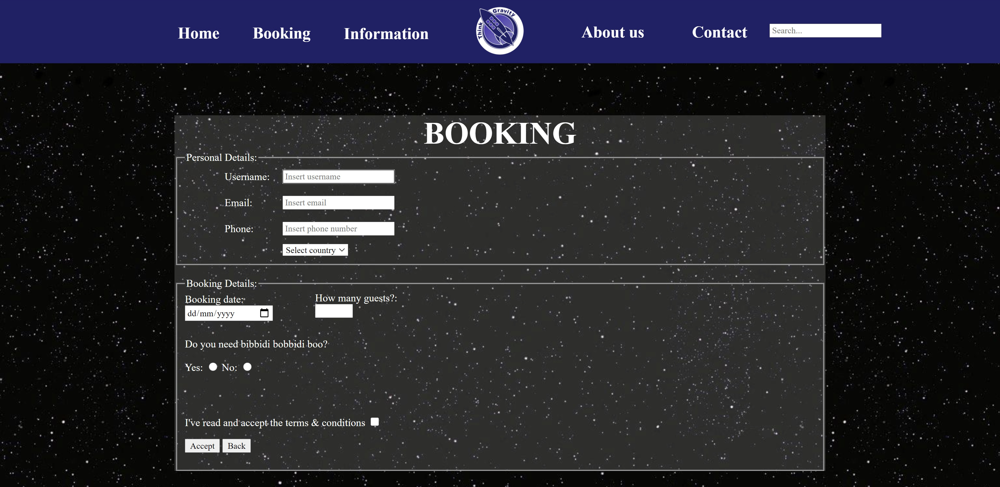

Om mig

Ann-Louise Aastrup
Multimediedesigner studerende.
Jeg er en motiveret kvinde der har arbejdet med kundeservice, leverer fremragende service og hurtige løsninger.
ERHVERVSERFARING
Texas Sports Café, SolrødBartender 2020-2020
- Håndtering af kundeservice
- Åbning og lukning af butik
- Udskænkning
ZARA, København
Kasseekspedient 2017 – 2019
- Håndtering af kundeservice
- Træne nye medarbejdere
- Åbning og lukning af butik
- Håndtering af defekte tøj
- Håndtering af online ordrer
- Rengøring
Fakta, Køge
Ungarbejder 2014 – 2015
- Håndtering af kundeservice
- Håndtering af udløbne varer
- Modtagelse af varer
- Indstilling af varer til visning
- Åbning og lukning af butik
- Rengøring
UDDANNELSE
Køge Gymnasium- STX - 2014 - 2016
- HF - 2016 - 2017
- Multimediedesigner - 2020 - nu
Jeg kan kontaktes på
-
 Ann-Louise Mølgaard Aastrup
Ann-Louise Mølgaard Aastrup -
 annlo@aastrup.co.uk
annlo@aastrup.co.uk
Favorit projekter

